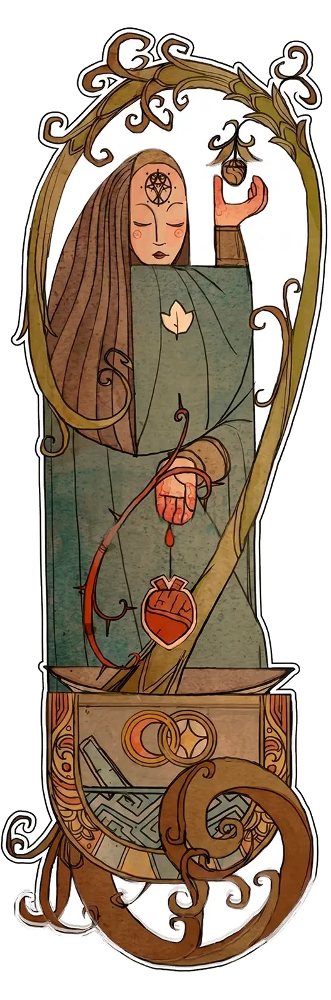
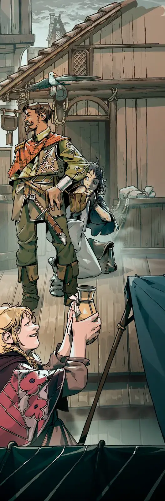

Manifestação Mágica
Alquimia e Herbalismo
COM NADA ALÉM DE UM ALMOFARIZ E PILÃO, ALGUÉM PODE DESBLOQUEAR A MAIS POTENTE DAS ESSÊNCIAS.
A alquimia e o herbalismo são artes relacionadas que envolvem encontrar, extrair e combinar propriedades especiais presentes em plantas, órgãos e materiais naturais e sobrenaturais, preparando-os em poções maravilhosas que podem tratar feridas ou tornar a pele dura como pedra. Muitas vilas e comunidades remotas dependem dessas práticas para suas necessidades cotidianas, enquanto os mestres dessas artes podem refinar até mesmo o próprio espírito.
Coletando Receitas
(A Magia É Coletada)
Receitas para misturas são difíceis de encontrar e ainda mais difíceis de inventar ou descobrir. Todo alquimista ou herbalista tem uma lista de suas receitas conhecidas, que muitas vezes são registradas em um tomo grosso ou em um maço de anotações rabiscadas. Um jogador mantém esta lista de receitas conhecidas junto com as cartas ou ficha do Herói. A receita em si não é um rótulo.
Uma mistura pronta para uso é representada por um rótulo (cataplasma de cura, veneno mortal), que é tanto um rótulo de poder no tema ou criado como um rótulo de história quando o herbalista prepara a mistura (veja abaixo). Herbalistas só podem criar misturas para as quais têm receitas; se quiserem expandir a lista, devem encontrar receitas ou negociá-las, ou investir tempo e esforço desenvolvendo novas.
Cada cenário pode ter algumas dessas receitas ou outras. Na maioria dos cenários, essas receitas são o resultado da sabedoria e especialização geracional coletiva transmitida ao longo dos anos.
Algumas dessas receitas podem ter nomes diferentes de sua aplicação – por exemplo, uma pomada curativa pode ser chamada pomada de raiz-de-sol , representando um ingrediente comum, e gotas de visão de coruja podem ser chamadas presente da fada da noite, originando-se de um conto folclórico sobre a época em que foi adquirido pela primeira vez, muitas gerações atrás. Nesse caso, registre o benefício da receita entre parênteses: pomada de raiz-de-sol (cura), presente da fada da noite (visão de coruja).
Preparando Misturas
(A Magia Exige Preparação)
Alquimistas e herbalistas criam misturas em um ambiente seguro, enquanto acampam ou fazem uma estadia (Preparação Antecipada). Criar é uma ação mágica que cria um rótulo de história a partir da lista de receitas conhecidas dos praticantes.
Rótulos de história de mistura são mantidos na mochila e podem ser compartilhados como qualquer outro item. Rótulos de poder podem representar misturas que você prepara regularmente e carrega consigo.
Um Estoque de Ingredientes
(A Magia É Escassa)
Alquimistas e herbalistas devem carregar ingredientes com eles. O status é reduzido em 1 como uma Consequência inerente a qualquer ação de preparação, embora esta Consequência possa ser amenizada normalmente por um praticante frugal . Os ingredientes não aumentam automaticamente ( Reabastecimento Trabalhoso ) – o praticante deve agir para aumentar este status comprando, colhendo ou forrageando ingredientes.
Além disso, receitas únicas e potentes podem exigir ingredientes especiais, como um cabelo de uma nixie, que devem ser obtidos com antecedência. Esses rótulos podem ser invocados como rótulos úteis na ação de preparação.
Consumindo Misturas
(A Magia É Gasta Quando Usada)
Usar uma mistura é uma ação mágica que pode ser feita a qualquer momento, inclusive durante uma cena, e por qualquer pessoa na posse da mistura (embora algumas misturas possam exigir instruções para serem aplicadas adequadamente). Quando uma mistura é usada, seu rótulo deve ser queimado por Poderio, representando o consumo do item. Isso vale para rótulos de poder, bem como para rótulos de história.
Variante: Misturando Ingredientes
(A Magia É Sinérgica, A Magia É Misteriosa)
Nesta versão detalhada de alquimia e herbalismo, os próprios jogadores experimentam preparar diferentes rótulos juntos, descobrindo suas propriedades e combinações benéficas enquanto arriscam efeitos colaterais indesejados.
Em vez de rastrear um suprimento geral de ingredientes, os jogadores rastreiam os rótulos de ingredientes individuais em sua mochila, cada um com suas próprias propriedades e aplicações, listadas entre parênteses: flor-de-fogo (aquece o corpo).
Receitas são combinações conhecidas de ingredientes, como:
- gota de orvalho carmesim + flor-de-fogo = Chá de Aquecer os Ossos, uma bebida que impede os montanhistas de congelarem na neve
- gota de orvalho carmesim + erva-venenosa + fungo toque-de-túmulo = Óleo Petrificante, um veneno aplicado em armas que causa paralisia de todo o corpo
Ao preparar uma receita, o praticante deve possuir e invocar seus rótulos de ingredientes, junto com quaisquer outros rótulos de especialização e experiência aplicáveis.
Os praticantes não conhecem as propriedades de todos os ingredientes e podem ter de descobri-las por meio de pesquisas ou de tentativa e erro, por sua própria conta e risco. Receitas não são obrigatórias para fazer uma mistura, mas fazer uma mistura sem uma receita resulta em uma substância cujas propriedades são desconhecidas e que deve ser testada ou cuidadosamente examinada a fim de ser compreendida e adicionada como uma receita.
EXEMPLOS DE MISTURAS
pó de fumaça ardente, chá calmante, bebida de purificação, bálsamo à prova de fogo, elixir de crescimento, pomada curativa, óleo magnetizador, orvalho de memória, veneno necrótico de aranha, gotas de visão de coruja, cataplasma para dor, veneno paralisante, pó acelerador, poção restauradora, bálsamo de pele-de-pedra, bebida de vigor, elixir de força, elixir de respiração aquática, neutralizador de veneno
EXEMPLOS DE INGREDIENTES
escama de basilisco
(endurece a pele)
fruto espinhoso em chamas
(incendeia quando arremessado)
videira de sangue
(coagula o sangue)
gota de orvalho carmesim
(aumenta o fluxo sanguíneo)
hera do crepúsculo
(causa fortes alucinações)
flor-de-fogo
(aquece o corpo)
tampa-de-gelo
(adormece a dor)
fungo toque-de-túmulo
(enfraquece a vitalidade)
seda de videira de aranha
(prende, engrossa e emaranha)
erva-venenosa
(paralisa os músculos)
Kits de Tema
 ZELADOR DO VERDE (ORIGEM)
ZELADOR DO VERDE (ORIGEM)
O Zelador do Verde é uma figura local – um tanto duvidosa, mas muitas vezes muito amada – que prepara misturas que sutilmente melhoram as habilidades naturais e promovem o bem-estar. Enquanto os membros da comunidade iriam a um boticário para curar uma doença, eles irão ao Zelador do Verde atrás de um pouco do estoque secreto que tornará a vida de quem receber muito melhor ou mais fácil. Algumas dessas receitas não são vistas com bons olhos pelos anciãos e mantenedores da ordem pública e devem ser negociadas em particular.
 BOTICÁRIO DA VILA (ORIGEM)
BOTICÁRIO DA VILA (ORIGEM)
Boticários e outros curandeiros são figuras de confiança em suas comunidades, misturando o prático com o vagamente extraordinário para criar remédios, pomadas e tinturas que curam, aliviam e protegem. Seu trabalho é fundamentado na tradição e moldado por uma conexão com a terra, permitindo-lhes servir como um apoio vital tanto em tempos de paz quanto de crise.
 ESPECIALISTA EM VENENOS (AVENTURA)
ESPECIALISTA EM VENENOS (AVENTURA)
Existem muitos venenos, peçonhas e toxinas no reino natural – e muitos mais nos reinos além – e o Especialista em Venenos fez de seu trabalho estudar todos eles. Um assassino prestigioso, eles são procurados por servos descontentes e cortesãos coniventes para desempenhar um papel mortal em seus esquemas e maquinações. Mantendo-se nas sombras, o Especialista em Venenos realiza seu trabalho silenciosa e invisivelmente, não deixando nenhum vestígio senão o dobre de sinos.
ORIGEM
Zelador do Verde
poção de foco, chá energizante , pó enraivecedor, misturar receitas, sabor delicioso, destinatários dispostos, almofariz e pilão, colher plantas, malandragemTodos deveriam estar usando minhas misturas.
ORIGEM
Boticário da Vila
aliviar a dor, pomada curativa, poção do sono, aplicação rápida, trato com pacientes, anatomia, bandagens, musgo de menta-doce, gratidão da comunidadeCurar doenças e aliviar o sofrimento de inocentes – esse é o nosso dever.
AVENTURA
Especialista em Venenos
venenos letais, venenos paralíticos, antídotos, ocultação aromática, criaturas e plantas exóticas, adaga revestida de veneno, misturar-se à multidão, estabelecer confiança, identidade secretaEvitar detecção e resistir à notoriedade.

Manifestação Mágica
Patronato Feérico
O CAPRICHOSO POVO DAS FADAS CONCEDE MAGIA MERCURIAL TÃO RAPIDAMENTE QUANTO A TOMA DE VOLTA. DELEITE-SE COM SUA MARAVILHA EFÊMERA ENQUANTO DURA.
Quando os mortais se veem como objeto de atenção de um dos Povos das Fadas, ocasionalmente recebem encantamentos misteriosos e desconcertantes do outro reino – por escolha, por meio de um pacto, ou talvez sem vontade ou sem saber. A magia do Povo das Fadas é tão volúvel quanto os seres que a concedem, crescendo e minguando de acordo com seu favor – e deixa sua marca caprichosa naqueles que se valem dela.
A Magia do Povo das Fadas
Para aqueles familiarizados com seus costumes, sabe-se que as fadas possuem magias como:
- Encantar itens com a fala, ou poderes abruptos de voo
- Feitiços de metamorfose e ilusão, frequentemente chamados de ‘glamours’
- Feitiços de trapaça, engano ou autoengrandecimento
- Manipulação da própria compreensão, dos sentidos e da mente desperta ou adormecida
- Encolhimento e aumento de itens incomuns
- Meios inexplicáveis de transporte de um lugar para outro, ou ‘estradas das fadas’
- Cura, mas também intoxicação; revigoramento ou, inversamente, esgotamento e enfraquecimento
- Previsões enigmáticas, muitas vezes mais confusas do que úteis
Inesperada e Volúvel
(A Magia é Volúvel)
Aqueles tocados pelo Povo das Fadas descobrem que sua magia fica mais forte e mais fraca à medida que a opinião de seu patrono sobre eles oscila. Um status polar, favor-da-fada / desaprovação-da-fada, rastreia essa atitude e ajuda ou atrapalha todas as ações mágicas usando a magia do patrono feérico.
O Narrador pode atualizar esse status após qualquer ação fortemente alinhada ou oposta às preferências do patrono (sem a capacidade do Herói de amenizá-lo). É do interesse dos tocados pelas fadas que desejam manter suas bênçãos mágicas identificar as preferências de seus patronos e ater-se a esse tipo de comportamento – embora as fadas sejam notoriamente caprichosas e muitas vezes mudem de ideia. Para a maioria dos praticantes e patronos, tentar ganhar o favor de seu patrono é uma ação Ameaçada, se não Extremamente Ameaçada.
Marca da Fada
(Consequências Típicas)
O uso da magia do Povo das Fadas muda os tocados pelas fadas. Como uma Consequência típica, o Narrador pode dar aos tocados pelas fadas rótulos de história representando atributos mágicos relacionados às fadas e à magia que elas concedem, como olhos brilhantes, aroma floral, sombras sinistras, hálito gelado, risada estranha ou um rabo de raposa. Esses atributos podem ajudar ou atrapalhar o personagem em diferentes situações, especialmente em situações sociais ou ao tentar esconder seu relacionamento com seu patrono.
Como regra, esses atributos não podem ser ocultados usando a magia da fada – apenas esforços mundanos podem ajudar com essa tarefa. A melhor maneira de se livrar das marcas completamente, se o usuário assim desejar, é pedir ao patrono feérico que o faça. No entanto, eles podem considerar essas marcas como presentes, e por isso tais pedidos provavelmente atrairão sua desaprovação.
Como outra Consequência típica de um feitiço de fada que deu errado, o patrono de forma criativa, maliciosa ou cruel inverte o resultado do feitiço, ou cumpre a intenção literal do tocado pela fada gerando resultados prejudiciais. Esse estilo de Consequência pode se manifestar de várias maneiras: desde um vizinho sofrendo o impacto disso (Más Notícias) até um espirro implacável que aflige o tocado pela fada, ou um encantamento de sono que deixa o próprio tocado pela fada sonolento em vez disso!
Kits de Tema
 TRAPACEIRO ASTUTO (ORIGEM)
TRAPACEIRO ASTUTO (ORIGEM)
O Trapaceiro Astuto usa a energia lúdica e travessa de sua amiga raposa mágica (sua patrona) para influenciar e manipular os outros. Através de ilusões inteligentes, diversões e pegadinhas, eles prosperam em situações sociais e se safam de problemas com truques.
Exemplos de Rótulos de Consequência: mais baixo agora , risada ecoante, rabo de raposa; também pode pregar uma peça em alguém próximo dando-lhes roupas que coçam ou um traseiro espinhoso em um momento inoportuno.
 MAGIA DA FADA GUIA DO LAR (ORIGEM)
MAGIA DA FADA GUIA DO LAR (ORIGEM)
Às vezes, uma casa antiga ou uma família com um histórico com as fadas tem uma pequena fada ou espírito cuidando da casa e protegendo-a. Um membro daquela família pode fazer amizade com o hob (fada guia do lar) e recorrer a seus poderes úteis, desde que estejam dentro de casa ou em suas terras. Hobs são notoriamente rabugentos e fáceis de ofender, e podem se tornar cruéis e até mesmo sombriamente violentos se uma afronta não for remediada.
Exemplos de Rótulos de Consequência: humor rabugento, desejo constante de arrumar, azarado longe de casa; pode também riscar rótulos de itens deixados pela casa.
 BARDO ESPALHAFATOSO (AVENTURA)
BARDO ESPALHAFATOSO (AVENTURA)
O Bardo Espalhafatoso inflama as paixões de seu público com uma música deliciosa ensinada a eles por seu patrono sátiro. Eles tocam e batucam melodias que excitam, atormentam e seduzem, e sua própria presença leva os outros à libertinagem e ao abandono.
Exemplos de Rótulos de Consequência: juba de cabelo rebelde, odor corporal almiscarado, pernas de bode, chifres.
 CAMPEÃO DO POVO DAS FADAS (AVENTURA)
CAMPEÃO DO POVO DAS FADAS (AVENTURA)
O Povo das Fadas é notoriamente conhecido por se intrometer em assuntos humanos ou convocar heróis humanos para suas guerras inescrutáveis e mesquinhas. De vez em quando, um deles, aparecendo perto de uma antiga pedra erguida ou de um lago turvo, oferecerá a um guerreiro sua panóplia de outro mundo em troca de lutar sob a bandeira favorecida por aquele misterioso patrono.
Exemplos de Rótulos de Consequência: tagarela fanfarrão, armadura brilhante cintilante , som fantasmagórico de chifres, braço de arma atrofiado.
 ARAUTO DO VERÃO (GRANDEZA)
ARAUTO DO VERÃO (GRANDEZA)
O Arauto do Verão é um distinto emissário da corte feérica do verão, carregando seu poder, autoridade e capricho aonde seu patrono – o majestoso e belicoso senhor feérico do verão – exigir. Como uma ponte entre os reinos, o Arauto espalha magicamente a essência do verão tanto por terras mortais quanto feéricas.
Exemplos de Rótulos de Consequência: pele luminosa, manto de fogo constante, sempre ensolarado onde estou, despertando inveja.
ORIGEM
Trapaceiro Astuto
mudar momentaneamente de aparência, imitar sons, infligir perplexidade, zombar dos poderosos, ler vulnerabilidades ocultas, dedos ágeis, respostas rápidas, provocar, parecer inofensivoAdicione um toque de travessura a cada situação séria.
ORIGEM
Magia da Fada Guia do Lar
repelir invasores, realizar tarefas domésticas, acender uma fogueira de cozinha misteriosa, curar uma doença, o familiar da casa, lareira amigável, suportar clima rigoroso, ficar invisível, esconder segredosEste é o meu lar, o qual devo proteger e do qual devo cuidar.
AVENTURA
Bardo Espalhafatoso
inflamar multidões, afrouxar inibições, dançar até cair, não prejudicado pela embriaguez, vigor inumano, incitar agressão, encantar bebidas, liberação restauradora, presença sedutoraEu sou o portador da alegria e da diversão.
AVENTURA
Campeão do Povo das Fadas
luta de espadas etérea, lâmina anuladora de magia, manto de proteção, premonições de batalha, poção estranha de cura, mover-se pelas Névoas, heráldica do Povo das Fadas, espiões corvos, bravuraLutarei conforme jurei.
GRANDEZA
Arauto do Verão
paixões estimulantes, convocar o verão, entradas dramáticas, manto de fogo, perspicácia política, momentos de alta tensão, lança dourada, combatente impetuoso, diplomata respeitadoEu sou o dia claro e a noite quente.
Manifestação Mágica
Moldar a Terra
SINTA A TERRA, SUAS RAÍZES, SEU AR E ÁGUA. É SUA. É VOCÊ.
Moldar a Terra é a magia de sentir, despertar, potencializar e direcionar a própria terra para fazer suas vontades. A conexão com a terra concede grande poder – alguns escolhem usá-lo em harmonia com o meio ambiente, enquanto outros o exploram para suas próprias necessidades.
Magia da Terra
(A Magia Extrai do Ambiente)
Moldadores da Terra só podem trabalhar com o que têm em mãos, dependendo do ambiente natural tanto para dar vida à sua magia quanto para abastecê-la com matérias-primas. Um moldador da terra aprende a reconhecer a essência disponível nas proximidades e a perceber como ela pode ser usada para seus propósitos atuais. Uma “terra” para um moldador da terra é muito mais do que apenas seu solo; são suas rochas e suas águas, sua flora e fauna, e é seu clima, o temperamento da terra. Tudo isso está disponível para um moldador da terra moldar com a sua magia.
Moldadores da terra valem-se de um recurso compartilhado, a essência-da-terra, que mede a vitalidade da terra. Seu nível depende da área: é alto na natureza primordial e intocada, exuberante de vida, e baixo em cidades movimentadas e terras devastadas, onde a natureza foi suplantada ou poluída. A essência-da-terra reflete apenas a quantidade de essência ambiental; não conta como um status útil para nenhuma ação mágica.
Esgotando a Terra
Todos os moldadores da terra na mesma área compartilham de sua essência (Suprimento Ambiental) e correm o risco de esgotá-la ao usar excessivamente as dádivas da terra. Como uma Consequência inerente de cada ação mágica, reduza o nível da essência-da-terra em 1, embora essa Consequência possa ser amenizada normalmente por um moldador da terra habilidoso. Ações usadas para sentir em vez de moldar estão isentas dessa Consequência.
Se a essência-da-terra acabar, continuar moldando a terra é possível, mas é desaprovado pela maioria dos moldadores da terra, pois isso pode devastar a terra. Abaixo do nível 0, as reduções da essência-da-terra se tornam o status polar terra-arruinada, significando danos aos ciclos de vida e à capacidade regenerativa da terra. A essência-da-terra regenera-se lentamente ao longo de várias horas ou dias, mas a terra-arruinada pode levar meses ou anos para se recuperar e pode tornar uma extensão de terra permanentemente desolada se chegar ao máximo (desolada:6).
Esculpindo, Não Criando
(A Magia Impõe Limitações) A magia do moldador da terra só pode usar elementos naturais existentes do meio ambiente, como o terreno, a flora e fauna, ou o clima. Ao descrever uma ação mágica, o moldador da terra não pode criar nada que já não esteja lá; eles só podem moldar, aumentar e direcionar esses elementos naturais.
Variante: Elementalismo
Em vez de uma única essência-da-terra, cada local tem uma mistura de status representando vários elementos adequados ao cenário. Por exemplo, uma colina verdejante poderia ter terra-3, madeira-2, água-2, fogo-0, metal-1. Os moldadores da terra limitam-se a essas energias do ambiente; cada ação mágica deve extrair um ou mais elementos específicos e o elementalista deve possuir rótulos positivos específicos que comprovem sua aptidão para manipular esses elementos. Como uma Consequência inerente, cada elemento usado é reduzido em 1. É impossível realizar ações de magia com um elemento que atingiu o nível 0 – simplesmente não há mais o que trabalhar, até a terra se recuperar.
Kits de Tema
 GEOMANTE DA CIDADE (ORIGEM)
GEOMANTE DA CIDADE (ORIGEM)
Geomantes locais são praticantes humildes do conhecimento antigo, que podem sentir, ver, ler ou calcular a posição das linhas de força ley e as correntes energéticas da terra. Com esse conhecimento, eles podem fornecer instruções sobre onde e como algo ou alguém deve ser posicionado, permitindo que extraia a essência da terra e maximize os efeitos benéficos das energias locais. Tais instruções geomânticas são específicas para o local, e seus efeitos são sentidos principalmente ao longo do tempo, especialmente em cidades e vilas agitadas onde a essência da terra está obstruída.
 SUSSURRADOR DA FLORESTA (ORIGEM)
SUSSURRADOR DA FLORESTA (ORIGEM)
O sussurrador da floresta usa as forças sutis da natureza para sobreviver e prosperar na selva. Ao direcionar suavemente os elementos naturais ao seu redor, falando com as plantas e desenhando linhas na areia, ele vive em harmonia com a natureza e ganha sua ajuda silenciosa.
 VINGADOR ANCIÃO (AVENTURA)
VINGADOR ANCIÃO (AVENTURA)
Os vingadores de cabelos brancos de territórios remotos e cobertos de neve valem-se da força silenciosa e mortal de suas terras, aproveitando-a para defender a tundra e os desertos congelados. Eles empunham gelo e neve como ferramentas e armas em sua busca para levar a luta aos seus inimigos, e desenvolveram a capacidade de armazenar e carregar consigo a própria fúria do frio.
 MOLDADOR ANCESTRAL DE TERRA (GRANDEZA)
MOLDADOR ANCESTRAL DE TERRA (GRANDEZA)
O Moldador Ancestral de Terra exerce um poder imenso para alterar paisagens e ecossistemas. Eles têm a capacidade de erguer montanhas, dividir florestas e redirecionar rios. Sua magia molda o mundo físico em uma escala imensa, forjando novos terrenos e restaurando terras danificadas. Um único Moldador de Terra pode drenar toda a essência de uma região geográfica com suas ações.
ORIGEM
Geomante de Cidade
sentir essência local, direcionar essência local, separar elementos, proteger contra o infortúnio, os efeitos se acumulam com o tempo, equilibrar energias locais, melhor se as datas principais forem conhecidas, bússola de ouro gravada, faro para negóciosTudo deve estar em seu devido lugar.
ORIGEM
Sussurrador da Floresta
incentivar o crescimento das plantas, fala dos animais, criar abrigo, comungar com a natureza, encontrar o caminho, guiar os outros, forragear em qualquer lugar, misturar-se à natureza, charme rústicoNão explore a terra; devolva tanto quanto você recebe.
AVENTURA
Vingador Ancião
vida selvagem da tundra, invocar um golem de gelo, erguer barreira de gelo, armazenar essência da tundra, esmagar e atravessar, região árida congelada, vingança sangrenta, forjar uma arma de gelo, protetor da naturezaTraga a vingança da geada sobre meus inimigos.
GRANDEZA
Moldador Ancestral de Terra
fluxo de magma, vendaval avassalador, luz deslumbrante, mudança defensiva, moldar formas incomuns, ver energias elementais, corpo gigantesco, adaptar-se ao perigo, calma inabalávelDeixar minha marca no mundo.
Manifestação Mágica
Invocação Rúnica
GLIFOS E PALAVRAS DE PODER ANTIGOS INVOCAM FORÇAS INVISÍVEIS, LIBERANDO SEU PODER SOBRE O REINO MORTAL.
A prática da invocação rúnica envolve acessar poderes mágicos por meio do conhecimento de símbolos e palavras arcanas, aplicando-os através de uma compreensão profunda ou sentimento de seu significado sobrenatural. Alguns inscrevem runas para fortalecer objetos, enquanto outros as invocam abertamente como feitiços mágicos. Cada runa tem seu próprio significado; os mais poderosos invocadores rúnicos dominam muitas dessas runas.
Obtendo Runas
(A Magia É Coletada)
As runas são o alfabeto ou palavras de uma língua antiga profundamente ligada à estrutura da Criação. A habilidade mágica de cada runa é determinada por seu significado na língua perdida. O rótulo para cada runa representa o significado da runa específica, como ”proteção”, ”fogo”, ou “arremessar”.
As runas estão escondidas, espalhadas pelo mundo. Algumas estão em lugares difíceis de alcançar, enquanto outras foram encontradas e são mantidas como um segredo bem guardado. Uma vez que um invocador rúnico encontra e decifra uma runa, ele precisa treinar usando-a em conjunto com outras runas ou passar algum tempo contemplando seu significado. Quando ele tem uma forte compreensão da runa, pode adicioná-la ao seu tema de magia como um rótulo de poder. As runas normalmente não podem ser representadas como rótulos de história, a menos que uma maneira especial seja concebida para armazenar o poder de uma runa sem compreendê-la.
Invocando Runas
(A Magia É Sinérgica, A Magia Impõe Limitações)
Ao realizar ações mágicas de invocação rúnica, o invocador deve desenhar ou escrever uma ou mais runas, cujos rótulos ele deve possuir e invocar ao contar o Poderio. Normalmente, o invocador deve ser capaz de mapear a runa de alguma forma, seja no ar, num objeto ou numa pessoa, ou ele deve ser capaz de pronunciá-la; lançar feitiços rúnicos não é possível sem uma coisa ou outra (princípio narrativo).
O efeito resultante é uma combinação dos significados das runas invocadas. Por exemplo, “arremessar” e ”fogo” podem ser invocados juntos para arremessar um projétil flamejante. Como cada runa conhecida é um rótulo de poder, quanto mais runas o invocador combinar no efeito final, mais Poderio a ação mágica terá, mas também mais específico será o seu efeito.
- “chamar” + “lobo” = conjurar um lobo em seu auxílio
- “chamar” + “lobo” + “muitos” = conjurar uma alcateia de lobos em seu auxílio
- “assustar” + “rugido” = produzir um estrondo de trovão que infunde terror em todos que o ouvirem
- “curar” + “amigo” + “rapidez” = fechar rapidamente as feridas de um aliado
A linguagem rúnica é flexível e as mesmas combinações podem produzir resultados diferentes, dependendo da vontade e aptidão do invocador. Por exemplo, “fogo” e “escudo” podem ser combinados para proteger um invocador do fogo, para envolvê-lo com chamas protetoras ou para protegê-lo do frio. O Narrador é o árbitro final sobre o quão flexível a linguagem rúnica é e quais efeitos mágicos podem ser obtidos de cada combinação.
RÓTULOS DE TEMA RÚNICO
O rótulo de título de um tema de Magia de invocação rúnica pode ser um rótulo de habilidade mágica geral, como Escritura de Runas, neste caso ele pode ser invocado em toda ação mágica realizada pelo invocador, desde que pelo menos um rótulo de runa também seja invocado. Ele representa uma aptidão geral, mas não pode ser usado em ações mágicas por si só. Alternativamente, o rótulo de título já pode incluir a primeira e principal runa aprendida pelo invocador. Por exemplo, Invocador de Chamas (“fogo”). Essa especialização permite ao invocador realizar ações mágicas apenas com seu rótulo de título, mas ela se aplica unicamente a ações mágicas que envolvem sua palavra rúnica.Variante: Runas Consumíveis
(A Magia É Preparada, A Magia Exige Esforço Extra, A Magia É Gasta Quando Usada)
Com esta variante, uma runa pode ser inscrita em materiais impermanentes (pergaminhos, talismãs ou até mesmo em sua pele) por quem a conhece, e posteriormente ser invocada por outros que talvez não tenham total compreensão da runa.
Inscrever uma runa é uma ação de preparo mágico que cria um rótulo de história de runa,
como talismã ofuda de “ocultar” ou tatuagem
de
“força”, que é armazenado
na mochila do Herói. Esta ação exige conhecer a runa como um
rótulo de poder, e possui os rótulos negativos inerentes exige
ferramentas,
exige
concentração e
exige
tempo.
Quando o dono da runa (ou qualquer pessoa que saiba ler a runa, a critério do Narrador) realiza uma ação mágica que invoca a runa, ele pode usar o rótulo de história como se fosse um rótulo de poder rúnico. No entanto, ele deve riscar o rótulo de história depois de ser invocado e não pode queimá-lo por Poderio (a variante de Baixa Magia). Um invocador pode combinar suas runas conhecidas (rótulos de poder) com tais runas temporárias (rótulos de história) em uma ação mágica.
Você pode desenhar um glifo para cada uma das runas nesta Forma de Magia. Inspire-se em sistemas de glifos antigos do mundo real, como Futhark, Brahmi, Ogham, Nsibidi, Hieróglifos Egípcios ou Escrita em Ossos Oraculares (Jiaguwen).
Se você deseja tornar a conjugação de runas mais imersiva e se os jogadores estiverem dispostos, você pode pedir para que desenhem os glifos sempre que invocarem esses rótulos rúnicos ou escolham os glifos certos dentre uma pequena coleção de cartas de glifos.
EXEMPLO DE LISTA DE RUNAS
“anexar”, “equilibrar”, “explodir”, “sangue”, “chamar”, “caos”, “frio”, “ocultar”, “morte”, “fogo”, “amigo”, “assustar”, “agarrar”, “endurecer”, “curar”, “saltar”, “vida”, “levantar”, “muitos”, “memória”, “mover”, “ordem”, “rapidez”, “quietude”, “rugido”, “ruína”, “segurança”, “afiação”, “escudo”, “dividir”, “pedra”, “força”, “atacar”, “sol”, “arremessar”, “tempo”, “verdade”, “desfazer”, “vazio”, “enfraquecer”, “arma”, “lobo”, “madeira”
Kits de Tema
 ESCRITURA DE RUNAS (ORIGEM)
ESCRITURA DE RUNAS (ORIGEM)
Os escritores de runas são artesãos que aprendem a imbuir objetos com propriedades mágicas simples e práticas, inscrevendo runas neles e sussurrando encantamentos milenares. Dessa forma, eles elaboram proteções protetoras, amuletos da sorte, armas de herança consagradas ao seu portador, e outras ferramentas de poder menor.
 INVOCADOR DE CHAMAS (AVENTURA)
INVOCADOR DE CHAMAS (AVENTURA)
Os invocadores aprendem a combinar runas espontaneamente, desenhando formas elaboradas no ar a fim de criar feitiços versáteis e adaptáveis no momento. Este invocador se concentra em runas que criam grandes e vistosos feitiços, e conta com seu raciocínio rápido e criatividade para enfrentar os outros na batalha.
 SÍMBOLOS TATUADOS (AVENTURA)
SÍMBOLOS TATUADOS (AVENTURA)
Cultos obscuros e mosteiros esotéricos há muito dominaram a arte de tatuar símbolos de poder em seus discípulos e monges — ou em suas vítimas, como experimentos vivos. O portador da tatuagem só precisa passar seus dedos sobre ela ou falar uma palavra mágica para desencadear sua força sobrenatural, mas deve suportar a dor de se tornar seu conduíte.
 SÁBIO RÚNICO (GRANDEZA)
SÁBIO RÚNICO (GRANDEZA)
Após anos de estudo, pode-se dominar as runas mais profundas e aprender como usá-las para influenciar a realidade de maneiras que desafiam a lógica. Alguns desses sábios até aprendem a invocar runas que dobram o tempo e o espaço, tornando sua magia verdadeiramente inspiradora em sua capacidade de remodelar o mundo com nada mais que uma palavra.
ORIGEM
Escritura de Runas
talismãs vestíveis, “anexar”, “endurecer”, ”segurança”, ”afiação”, gravações duradouras, esteticamente agradável, faca de entalhar madeira, ansioso para ajudarTrate suas runas como obras de arte primorosas.
AVENTURA
Símbolos Tatuados
“força”, “sombra”, “roubar”, “imbuir”, “dor”, ativação sussurrada, tatuagem de mapa do submundo, cowl e capa, revelação completa da tatuagemAqueles que me marcaram desta forma detêm a chave para mais poder.
AVENTURA
Invocador de Chamas
(“fogo”), ”cegar”, “assustar”, “rapidez”, “arremessar”, escrita rápida, colorido e chamativo, duelista, tempo perfeito, língua afiadaO fogo queima através de qualquer coisa que esteja em seu caminho.
GRANDEZA
Sábio Rúnico
“memória”, “dividir”, “verdade”, ”desfazer”, “reino”, línguas antigas, tomo parcialmente decifrado, memória perfeita, olhar murchoNão deixar nenhum segredo por descobrir.
Manifestação Mágica
Metamorfose
A PRÓPRIA FORMA É UMA ILUSÃO FRÁGIL QUE PODE SER MOLDADA OU DESCARTADA PARA REVELAR O VERDADEIRO PODER — CORRENDO O RISCO DE PERDER A SANIDADE.
Assumir novas formas ou corpos, seja como uma habilidade inata ou como uma arte, é um poder possuído por muitas lendas de criaturas e praticantes de magia. Enquanto mantêm sua mente consciente, metamorfos podem mudar sua forma física ou possuir uma nova e tornarem-se dotados de força e habilidades fantásticas. No entanto, todos os metamorfos correm o risco de perder o controle e sucumbir aos instintos primordiais de uma forma. Alguns evitam esse controle inteiramente; outros o desenvolvem e tornam-se mais versáteis e refinados.
Mudando de Forma
(Opcional: A Magia Exige Esforço Extra)
Se o metamorfo já possuir os rótulos para a nova forma (seja como rótulos de poder ou como rótulos de história preparados com antecedência), a mudança costuma ser uma ação Simples que não encerra o Holofote de um Herói (a menos que seja de alguma forma incerta ou dificultada, ou a mudança seja particularmente lenta).
Se o metamorfo estiver se transformando em uma nova forma para a qual ele não tem rótulos, então a mudança é uma ação de preparo mágico que é usada para criar um rótulo de história representando a nova forma. Rótulos de história adicionais representam características e habilidades extras da nova forma, estruturando um tema de história. O Narrador pode adicionar um rótulo de história negativo para completar o tema como de costume.
Mudar de volta para a forma original do metamorfo também é uma ação Simples, a menos que sofra algum tipo de resistência (veja o status instinto abaixo), caso em que deve ser resolvido como uma ação Rápida.
Agindo na Nova Forma
(A Magia Exige Uma Transformação, A Magia Impõe Limitações)
Invocar rótulos de poder ou rótulos de história da forma alternativa só é possível quando você estiver vestido com aquela forma, a menos que o Narrador concorde que um rótulo específico também estava disponível em outras formas (como os sentidos aguçados de um lobisomem).
Da mesma forma, cada forma tem suas restrições, sejam físicas, mentais ou
sociais. Freqüentemente, certas tarefas que são simples na forma humana tornam-se
impossíveis quando transformado, o que impede que o Herói invoque
certos rótulos de poder, por exemplo, tocar flauta quando na forma de
corvo.
A critério do Narrador, os rótulos negativos de uma forma também podem afetar ações
tomadas quando em outras formas, por exemplo, o cheiro
distintivo de um lobisomem.
Instinto Incontrolável
(A Magia Traz Um Preço)
Todos os metamorfos correm o risco de perder o controle sobre si mesmos quando estão transformados. Por esse motivo, os metamorfos são temidos até mesmo pelos seus amigos mais próximos.
Como uma Consequência inerente da transformação, todo metamorfo recebe o status instinto-1 (ou mais alto, a critério do Narrador). Como uma Consequência típica para cada ação tomada enquanto na nova forma, este status pode ser repetido (acumulando vários status instinto para aumentar seu nível).
O status instinto representa a perda de controle sobre as ações do metamorfo. O Instinto ajuda em todas as ações que são governadas pelo instinto da forma alternativa (a habilidade de caça de um lobo, a estabilidade de uma árvore, a fome devoradora do fogo), e prejudica todas as ações que exigem as faculdades opostas da forma e mente originais do metamorfo, como pensamento complexo, tomada de decisões, precisão, sutileza, empatia, comunicação ou estratégia.
O Instinto também serve como um status compelente, forçando o metamorfo a transformar-se na forma correspondente (ou permanecer nesta forma) e agir de acordo com o instinto. Cada personagem tem um limite de instinto( ). Quando ele atinge o máximo, o metamorfo deve se transformar, se já não estiver na forma do instinto, e é completamente dominado por essa forma, forçado a agir de acordo com seus impulsos e incapaz de se transformar de volta à sua forma original.
Transformar-se de volta à forma original com sucesso pode ou não fazer o status instinto expirar, a critério do Narrador. Um metamorfo que pode se transformar em múltiplas formas pode ter instintos diferentes, como instinto-de-lobo, instinto-de-coelho e instinto-de-corvo. O Instinto expira com descanso suficiente, como quando se Descansa ao acampar.
EXEMPLOS DE TEMAS DE HISTÓRIA DE FORMA
Forma de Gato Doméstico
passo furtivo
inesperadamente no caminho
erva-de-gato
Forma de Bruxa Monstruosa
couro resistente
língua de chicote
caçadores de monstros
Glamour de Guarda Real
armadura verossímil
memória muscular de guarda
bainha sem espada
Corpo Etéreo
possuir uma mente
ficar invisível
sem corpo
Transformação Involuntária
O Narrador pode dar o instinto como uma Consequência típica de ser exposto a condições e substâncias que forçam uma transformação. No exemplo do lobisomem, o instinto pode ser uma Consequência durante a lua cheia, ser esfaqueado por prata ou sentir raiva. Quando atinge o máximo, a transformação ocorre quer o Herói queira ou não.
Kits de Tema
 SONHADOR DE FERAS (ORIGEM)
SONHADOR DE FERAS (ORIGEM)
Muitos podem sonhar à noite em se tornar um cavalo galopante ou um cervo voador, mas para uns poucos indivíduos talentosos, esses sonhos se tornam realidade. Enquanto dormem, um sonhador de feras pode lançar sua alma no corpo de um animal próximo e guiar suas ações. No entanto, além do comportamento inexplicável da besta e as coisas que o sonhador viu ou ouviu através de seus sentidos, há poucas provas de que tal sonho fosse algo mais do que um fruto de sua imaginação.
 FORMA DE LOBISOMEM (AVENTURA)
FORMA DE LOBISOMEM (AVENTURA)
O lobisomem é amaldiçoado – seja por doença, magia ou sangue – a se transformar em uma forma híbrida bípede de lobo-humano. A força imensa desta forma e as habilidades ferozes representam um grande perigo para os inimigos do lobisomem e aliados igualmente.
 CORPO ELEMENTAL (GRANDEZA)
CORPO ELEMENTAL (GRANDEZA)
Ao metamorfosear seu corpo ou unir seu espírito com o de um elemento puro, este praticante assume a forma de um material, um fenômeno natural ou até mesmo uma força abstrata. Ele detém um poder inimaginável, remodelando o mundo e desafiando as fronteiras da existência mortal. O instinto deste kit de tema costuma ser expresso por ações imperativas e escolhas incompreensíveis para as mentes humanas.
 DOPPELGANGER (AVENTURA)
DOPPELGANGER (AVENTURA)
Doppelgangers são metamorfos especializados em assumir a forma de seres humanos, na maioria das vezes suas próprias vítimas. O instinto deste kit de tema pode refletir os instintos do corpo humano copiado: letargia, gula, luxúria, hiperatividade, etc., ou alternativamente, o ímpeto instintivo de matar e tomar o lugar da pessoa cuja forma o doppelganger assumiu, imitando sua personalidade e agindo como ela na vida cotidiana.
ORIGEM
Sonhador de Feras
sonhar em animais selvagens, espírito animal pessoal [escolha], ataque feroz, me acordar, sentidos animais, noites de lua cheia, movimento furtivo, afinidade animalPor que minha alma vagueia à noite?
AVENTURA
Doppelganger
um rosto esquecível, mudanças cosméticas, ler as memórias deles, tempo para estudar a vítima, contato próximo com a vítima, ataque repentino, mentira rápida, pele de camuflagemDescubra quem eu sou experimentando disfarces diferentes.
AVENTURA
Forma de Lobisomem
força enorme, dentes e garras, caçador implacável, sentidos aguçados, uivo aterrorizante, forma verdadeira de lobo, cobertura da noite, luta em bando, um número seleto de amigos de confiançaEncontre uma maneira de viver com o lobo em vez de combatê-lo.
GRANDEZA
Corpo Elemental
fluxo de magma, vendaval avassalador, luz deslumbrante, mudança defensiva, moldar formas incomuns, ver energias elementais, corpo gigantesco, adaptar-se ao perigo, calma inabalávelSuperar todos os limites da forma mortal.
Manifestação Mágica
Feitiçaria
ENVOLTO NOS FIOS EMERGENTES DA TRAMA OCULTA DE NOSSO MUNDO, UM FEITICEIRO PODE TORNAR REALIDADE SEUS SONHOS MAIS SELVAGENS COM APENAS UMA PALAVRA.
Feitiçaria é a arte secreta de puxar, entrelaçar e liberar os fios mágicos da realidade para moldá-la de maneiras maravilhosas e aterrorizantes. Sua prática exige conhecimento arcano, grande parte do qual perdido no tempo, bem como disciplina, precisão e sempre – uma partícula da própria força vital do feiticeiro. Em retorno, os feiticeiros canalizam um incrível poder através de seus feitiços, ilimitável em seu potencial e versatilidade e, ao mesmo tempo, perigoso em seu retorno catastrófico.
Encantamentos Únicos e Poderosos
(A Magia É Gasta Quando Usada)
Um feiticeiro lança feitiços – surtos mágicos de uso único que têm grande poder. Sempre que um feitiço é lançado, o Herói deve queimar seu rótulo por Poderio, começando cada feitiço com 3 de Poderio em vez de 1, mas tornando a conjuração um evento pouco frequente. Portanto, feitiços são geralmente representados por um rótulo específico, mas se um feiticeiro não tiver um rótulo específico para queimar, ele pode queimar um rótulo mais amplo (como seu rótulo de título de tema de Magia).
Rótulos de feitiço podem fazer parte de um tema de Magia, representando fórmulas praticadas, ou rótulos de história mantidos na mochila do Herói, representando feitiços memorizados com antecedência, ou armazenados em itens como pergaminhos ou anéis mágicos. Rótulos de poder de feitiço são recuperados normalmente, assim como através do Descanso de acampamento, e um conjurador pode ter rótulos como relembrar feitiço para ajudar a recuperar rótulos de feitiço perdidos mais rapidamente.
FEITIÇO ESPONTÂNEO
Feiticeiros também podem tentar uma forma mais espontânea de feitiçaria,
realizando uma ação de preparo para criar um novo rótulo de feitiço na hora (frequentemente usando
seus rótulos de título de tema de Magia e outros rótulos amplos) e então lançar o
feitiço queimando o novo rótulo de feitiço. Esta ação de preparo não incorre
nos riscos de lançar um feitiço (veja abaixo), mas o Narrador pode determinar que
ela exige algum tempo, especialmente se
o
feitiço for complicado.
A Feitiçaria Exige Um Preço
(A Magia Traz Um Preço)
Um feiticeiro usa sua própria força vital para tecer um feitiço mágico. Como uma Consequência inerente sempre que um feitiço é lançado (ação mágica ou reação), o feiticeiro se torna drenado-1, um status que prejudica todas as ações mágicas, bem como outras formas de esforço mental e físico.
Esta Consequência pode ser amenizada normalmente. Feiticeiros podem possuir habilidades ou itens que os ajudem especificamente a diminuir a exaustão ou a se recuperar rapidamente dela, como espírito resistente ou frasco de mana.
Descanso suficiente (incluindo Descansar ao acampar) pode restaurar a energia do feiticeiro e expirar o status.
Conjuração Complexa
(A Magia Exige Esforço Extra)
O feiticeiro deve usar os gestos manuais e as palavras mágicas corretas
a fim de lançar o feitiço. Este processo é delicado e exige foco
e concentração. Como tal, todos os feitiços de feitiçaria possuem os
rótulos negativos inerentes exige
encantamento,
exige gestos com as mãos e
exige
concentração; se algum destes estiver ausente, o feitiço é enfraquecido e
o risco de falha aumenta. Feiticeiros podem treinar em técnicas que
contornam esses requisitos escolhendo rótulos como feitiço
silencioso,
feitiço imóvel e uma mente de aço.
Falha Crítica Perigosa
Como uma Consequência típica, uma ação de conjuração que não resulta em um Sucesso ainda pode lançar o feitiço, mas com resultados indesejados. O Narrador deve determinar os Efeitos das Consequências com base no Poderio da ação de conjuração – quanto mais poderoso for o feitiço que falhou, mais severo será o infortúnio.
Variante: Feitiçaria Corruptora
(A Magia Traz Um Preço)
A magia é uma prática proibida que distorce a alma do feiticeiro. Em vez de pagar com energia vital, feiticeiros são corrompidos pela magia, recebendo corrompido-1 como uma Consequência inerente da conjuração (eles podem tentar amenizá-la se tiverem os meios).
A corrupção não expira por si só: remover corrompido só pode ser feito com a magia restauradora certa, muitas vezes um feito além do poder da feitiçaria corruptora. Quando corrupção excede seu máximo (acima do nível 5), o Narrador altera os temas e rótulos do Herói, tornando-os desumanos e malignos.
Kits de Tema
 POTENCIAL DESTREINADO (ORIGEM)
POTENCIAL DESTREINADO (ORIGEM)
As tradições antigas afirmam que o potencial para a magia pode florescer em qualquer um. Este indivíduo rude possui o poder, talvez, para lançar feitiços mágicos, mas ele não tem nem o conhecimento nem a habilidade. É tudo que ele pode fazer para conduzir desajeitadamente a onda de possibilidades cintilantes quando o momento exige.
 ESPADACHIM ARCANO (AVENTURA)
ESPADACHIM ARCANO (AVENTURA)
Espadachins Arcanos são mercenários inescrupulosos, guarda-costas ou assassinos que empregam feitiçaria a fim de alcançar a supremacia em batalha, e que vendem seus serviços a quem pagar mais. Seus feitiços podem protegê-los de ataques, aumentar suas proezas de luta ou aniquilar seus inimigos. Esse foco em feitiçaria de batalha, entretanto, os força a negligenciar outros campos da magia.
 MAGO ANDARILHO (AVENTURA)
MAGO ANDARILHO (AVENTURA)
Com seus característicos chapéus pontudos, vestes gastas e cajados ornamentados, Magos Andarilhos são uma visão rara, mas fácil de se reconhecer. Viajando pelo mundo por suas próprias razões desconhecidas, eles cultivam um entendimento eclético de magia e um amplo conhecimento de feitiços, tão amplo que às vezes demoram um momento para examinar. Eles usam essa arte para o bem ao resolver (ou causar) os problemas dos moradores locais, em troca de acomodação, comida ou moeda (ou serem expulsos da aldeia).
 ARQUIMAGO ABISSAL (GRANDEZA)
ARQUIMAGO ABISSAL (GRANDEZA)
O Arquimago das Artes Abissais é um mestre da magia proibida, empunhando um poder aterrorizante com pouca consideração pelos riscos. Ele ultrapassa os limites da magia, dobra a realidade à sua vontade e corteja a corrupção e o perigo enquanto se esforça para atingir seus objetivos impiedosos. Seu poder tem um custo, mas para o Arquimago, nenhum preço é alto demais.
ORIGEM
Potencial Destreinado
feitiço de última hora, truques telecinéticos, feitiço do sono, feitiço para abrir fechaduras, feitiço de encanto, rápida recuperação de mana, espírito livre, maço de notas, personalidade magnéticaEu não encontrei o mestre certo ainda.
AVENTURA
Espadachim Arcano
inflamar uma lâmina, feitiços de área, barragem bruxa, desaparecer e reaparecer, proteção de escudo, revelar inimigos, poção de mana, alerta, foco sob pressão, estrategistaA magia é uma ferramenta tão importante quanto minha espada e minha armadura.
AVENTURA
Mago Andarilho
discernir feitiçaria, contramágica, livro de feitiços em expansão, transfiguração, membros em pedra, fogos de artifício mágicos, servo invisível, conhecimento de feitiçaria, cajado de projeção, inquisitivoA melhor solução para qualquer problema é um feitiço engenhoso!
GRANDEZA
Arquimago Abissal
onda de corrupção, invocar sombras, dominar vontade, rasgar fendas na realidade, conhecimento de entidades abissais, seres inferiores, cristal corrompido, controlar o caos, universalmente temidoEm breve, o segredo final das artes abissais será revelado a mim!
Manifestação Mágica
Amarração de Espíritos
NOSSO MUNDO É MOLDADO POR PRESENÇAS ALÉM DA VISÃO, ALGUMAS GRACIOSAS E OUTRAS MALEVOLENTES. APRENDA A DOMINÁ-LAS E VOCÊ DOMINARÁ TODAS AS COISAS.
A arte da amarração de espíritos busca compreender e comandar as forças personificadas, porém frequentemente invisíveis, que habitam e moldam o mundo. Esses “espíritos” estão em todos os lugares, tanto no mundo natural quanto nas moradias e assentamentos humanos, e além, em outros reinos. Amarradores de espíritos muitas vezes aprendem a interagir e amarrar um certo tipo de espírito; praticantes experientes e conhecedores exercem domínio sobre muitos espíritos.
Localizando e Amarrando Espíritos
(A Magia Exige Preparação)
“Amarrar” é um termo geral para muitas abordagens diferentes. Um praticante pode tornar-se amigo de um espírito, apaziguá-lo com oferendas, contê-lo com proteções místicas e então forçá-lo a obedecer, oferecer seu próprio corpo como hospedeiro do espírito, ou subjugar completamente o espírito invocando forças superiores relacionadas à sua origem.
Cada espírito tem sua própria origem, habilidades e propósitos. Compreender, encontrar e identificar espíritos para amarrar é o primeiro passo no trabalho de um amarrador de espíritos. Um amarrador de espíritos pode agir, de forma mágica ou não, para obter acesso a tais espíritos (ex: sentir misticamente espíritos próximos ou simplesmente conversar com um espírito visível). Muitos amarradores de espíritos tornam-se bons comunicadores e investigadores a fim de descobrir quais espíritos estão disponíveis para eles amarrarem.
Amarrar um espírito é uma ação de preparo mágico, que cria rótulos de história representando o espírito e suas habilidades. O primeiro rótulo de história criado deve ser o nome do espírito. Rótulos de história adicionais representam as habilidades específicas do espírito, formando um tema de história. O Narrador pode adicionar um rótulo de história negativo para completar o tema como de costume. Quando um amarrador amarra um espírito, ele também pode gastar Poderio para fazê-lo manifestar-se já em um estado específico, dando-lhe um status como amigável ou em chamas.
Colocando Espíritos Para Trabalhar
Uma vez que o rótulo de história do espírito está na posse do amarrador, ele é considerado no controle do espírito e pode usar seus rótulos em ações de aliado (página 164). O amarrador também pode dispensar (banir) o espírito à vontade, a menos que um rótulo ou status indique que ele está inclinado a persistir por conta própria.
O espírito amarrado realizará ações que se opõem à sua própria vontade, e até mesmo à sua própria sobrevivência. Porém, como uma Consequência típica dessas ações, o espírito pode se tornar desafiador, não colaborativo, ou mesmo vingativo, representando sua resistência em continuar a agir contra a sua vontade. Um espírito também pode libertar-se do controle do amarrador, ficando livre para escapar ou retaliar (Novo Desafio). Alternativamente, esses status emocionais poderiam ser rastreados contra um limite de libertar-se( ); quando ele é atingido, o espírito se liberta.
Perigos da Amarração de Espíritos
(A Magia Traz Um Preço)
Entrar em um pacto com um espírito exige que um preço seja pago: o próprio espírito do amarrador se desalinhada com seu corpo físico. Como uma Consequência inerente, a mente e a alma do amarrador podem se tornar desorientado-1. Esse status prejudica quase todas as ações que dependem de sentidos ou ações físicas, já que o corpo do amarrador não se submete à sua vontade. Para reduzir desorientado, o amarrador deve passar algum tempo descansando e se entregando a simples prazeres, o que ancora seu espírito de volta ao corpo.
Alternativamente, amarrar um espírito permite que a natureza dele influencie o amarrador. Alguns espíritos da natureza afetam sua personalidade para que corresponda à deles (bestial). Amarrar espíritos de doença ou morte drena diretamente sua vitalidade (enfraquecido). Espíritos que representam ideais humanos exigem sua submissão (obediente). Alguns tipos de espíritos podem tentar possuir o amarrador (possuído). Cada um destes prejudica ações diferentes, e pode ser removido de maneiras diferentes.
Amarrando Espíritos de Desafio
Desafios que são espíritos também podem ser amarrados por um praticante com o conhecimento adequado.
O amarrador deve primeiro banir( ) ou apaziguar( ) com sucesso o espírito, mostrando seu poder sobre ele. Então, se ele decidir tentar amarrá-lo, o Narrador adiciona um Limite de amarrar( ). Quando chega ao máximo, o amarrador ganha Poderio igual à soma do Limite de banir( ) (ou apaziguar( )) e do Limite de amarrar( ) para gastar em rótulos de história para o espírito.
EXEMPLOS DE TEMAS DE HISTÓRIA DE ESPÍRITO
Vovô Lo
sons corporais nojentos
lição de história
facilmente distraído
Vontade do Sábio
guia para segurança
desorientar
travesso
Cão da Morte
mordida fantasma
uivo congelante
aterroriza meus aliados
Arconte do Domínio
faça-os curvar-se
decreto imperativo
só ajuda os verdadeiros
governantes
Kits de Tema
 CULTO AOS ANCESTRAIS (ORIGEM)
CULTO AOS ANCESTRAIS (ORIGEM)
Os espíritos dos ancestrais de alguém pairam sobre eles e os protegem da melhor forma que podem, mas a maioria dos ancestrais tem pouco poder sobre os vivos. Os adoradores que conseguem comungar com os ancestrais podem compartilhar de seus conhecimentos, experiências e sabedoria, receber orientação de além-túmulo, e podem até mesmo canalizar brevemente seus antepassados através de seus corpos, embora personalidades irritantes e velhas queixas possam ficar no caminho.
 MESTRE DE FAMILIARES (ORIGEM)
MESTRE DE FAMILIARES (ORIGEM)
Familiares são espíritos de outro mundo que assumem o disfarce de animais, criaturas místicas, pessoas ou fenômenos naturais. Eles possuem poderes miraculosos que eles colocam abnegadamente à disposição de seu mestre, uma vez que sua lealdade tenha sido conquistada. Muitos bruxos e bruxas extraem suas habilidades sobrenaturais de um ou mais familiares, e buscam encontrar e amarrar espíritos mais poderosos ao seu serviço.
 INVOCADOR DE ESPÍRITOS DA NATUREZA (AVENTURA)
INVOCADOR DE ESPÍRITOS DA NATUREZA (AVENTURA)
Cada lugar na natureza e cada fenômeno natural é zelado e cultivado pelos seus próprios espíritos secretos. Em poças de água escondidas, no topo de pontos turísticos proeminentes, e na floresta farfalhante pode-se encontrar dríades, demônios do vento, e ninfas, que podem ser aliados poderosos. Aqueles que invocam a ajuda de tais espíritos costumam ser respeitosos para com eles e fazem o possível para se alinharem aos interesses da natureza.
 CONEXÃO DEMONÍACA (AVENTURA)
CONEXÃO DEMONÍACA (AVENTURA)
Demônios, ou espíritos de fúria e violência, são excepcionalmente perigosos de controlar. Quem falha deve se preparar para pagar caro, enquanto conseguir garante à pessoa um imenso poder de domínio e destruição.
ORIGEM
Culto aos Ancestrais
ancestrais coléricos, ancestrais sábios, memória cultural, falar com a voz deles, disposição da terra, protegendo minha família, artes e ofícios ancestrais, mostrando respeito, voz da comunidadeNossa família vem em primeiro lugar.
ORIGEM
Mestre de Familiares
espírito de proteção, espírito das neves, espírito trapaceiro, espírito de jade, familiar das serpentes, cuidar de familiares, lanches de frutas perfumadas, transformação de familiar, recipiente de contençãoMeus familiares e eu estamos ligados pelo mesmo destino.
AVENTURA
Invocador de Espíritos da Natureza
espíritos da pedra, espíritos animais, espíritos da folhagem, espíritos climáticos, sentir espíritos próximos, sentir corrupção, alinhado com a vontade do espírito, linguagem reverente, encontrar o meio termoSomente em harmonia com o mundo natural nós humanos encontraremos o nosso lugar.
AVENTURA
Conexão Demoníaca
demônios de fogo, demônios aterrorizantes, demônios de pestilência, corromper paisagem natural, destruição em grande escala, conhecimento sobre demônios, causar tensão, língua sedutora, afirmar domínioPara aumentar meu poder, devo encontrar e controlar os demônios mais poderosos.
Manifestação Mágica
Bruxaria
LUA DO CAÇADOR DE FEITIO COMO O SANGUE, OUÇAM VÓS O NOSSO ENCANTAMENTO, ALÉM DO VÉU DESEJAMOS ESPREITAR, PARA UMA ALMA DESPEDAÇAR.
A bruxaria depende de rituais elaborados para invocar luas eternas e manifestar os poderes de deusas e demônios. De feitiços a bênçãos, bruxas empunham uma arte antiga; seus rituais exigem compreensão oculta, talento, tempo e concentração, bem como condições, ferramentas e ingredientes específicos, mas as recompensas são potentes e de longo alcance.
Rituais de Bruxaria
(A Magia Exige Esforço Extra, A Magia Pode Ser Potencializada)
Bruxas conduzem rituais longos e elaborados a fim de enfeitiçar, encantar, e maravilhar. Esses rituais podem alcançar resultados poderosos, desde que certas regras da magia sejam observadas.
Rituais são tipicamente realizados para:
- Adivinhação e vidência
- Comungar com fadas, espíritos, anjos e demônios
- Bênçãos e maldições (enfeitiçar)
- Colocar ou quebrar um encantamento sobre um lugar ou uma pessoa
- Proteção contra infortúnios ou forças de outro mundo
- Causar danos ou acidentes
Os requisitos de um ritual são representados pelos rótulos negativos
inerentes exige tempo,
exige
concentração,
exige gestos ou
encantamentos
, e
exige implementos. Esses
rótulos negativos normalmente não entram
em jogo quando um ritual é realizado com preparação
adequada, mas eles podem limitar uma bruxa de tomar ações mágicas
espontâneas ou apressadas (veja Truques Mágicos, abaixo).
Rituais podem ganhar mais Poderio através destes meios, todos os quais são rótulos positivos inerentes:
- Rimas (encantamentos rimados): Este rótulo é útil quando um jogador (ou o Narrador) profere o encantamento de sua bruxa com uma rima. Deve ser uma nova rima a cada vez.
- Magia Simpática (magia simpática): Este rótulo é útil quando o praticante fez um esforço considerável para representar simbolicamente indivíduos, forças ou leis mágicas envolvidas no ritual. Isso pode envolver o uso de uma efígie ou boneco para representar o alvo do feitiço, ou fazer um movimento de corte com uma faca para representar o corte de um vínculo emocional. Se o simbolismo for representado por um rótulo existente (como um rótulo de item), invoque esse rótulo em seu lugar.
- Tempos e Lugares Especiais (momento de poder, lugar de poder ): Esses rótulos são úteis quando o ritual é realizado durante um momento especial de poder, como a lua nova ou uma data astrológica única, ou em um lugar de poder, como sobre um túmulo ou em um altar no topo de uma montanha. Para fortalecer um ritual, o significado do tempo e/ou lugar deve ser congruente com seu propósito.
- Sentimentos poderosos: A critério do Narrador, status como irritado, amargurado, ou amoroso podem ajudar a fortalecer um ritual com o qual eles estão relacionados e congruentes. A presença de sentimentos poderosos também pode atrapalhar a concentração e portanto poderia causar uma terrível catástrofe para uma bruxa. Um Narrador pode decidir que sentimentos fortes são favoráveis a uma parte do ritual, mas são um impedimento para outra.
Tipos de Rituais
Existem diversas maneiras de refletir ações mágicas de bruxaria – rituais – em seu jogo.
TRUQUES MÁGICOS (RITUAIS MENORES)
(Ritual Como Detalhe Narrativo)
A bruxaria pode ser usada para encantamentos rápidos, orações, ou gestos com as mãos realizados pelo praticante para operar pequenos milagres, fornecer proteção limitada, para causar um infortúnio, ou para amaldiçoar um vizinho irritante com uma coceira inexplicável, embora temporária.
Tais truques mágicos são realizados como uma única ação mágica.
Entretanto, devido ao fato de que a bruxaria exige
tempo,
eles produzem efeitos inerentemente mais fracos (-1 Poderio).
Muitas bruxas carregam um implemento portátil como
uma varinha de aveleira, uma adaga curva ou um talismã
enfeitiçado (narrativamente ou como um rótulo) para focar sua magia
e satisfazer a necessidade por implementos mesmo quando não há
tempo para se preparar; sem uma ferramenta como esta,
truques mágicos se tornam ainda mais fracos (-1 Poderio).
Uma bruxa sem tempo, sem ferramentas, sem a habilidade de entoar cantos ou gesticular, e sem a habilidade de se concentrar está quase perdida (-4 Poderio).
RITUAIS DENTRO DE UMA CENA
(A Magia Exige Acumular Poder)
Quando um ritual é realizado dentro da cena, mas não é o foco da cena, a bruxa deve realizar uma ou mais ações de preparo mágico para preparar o ritual e acumular poder-mágico suficiente. Isso envolve a bruxa centrando-se, mexilhando sobre um altar, cantando, dançando, meditando, e coisas do tipo. Para acelerar esse processo, bruxas muitas vezes sacrificam oferendas (coalhada de creme) ou representações simbólicas do alvo do feitiço ( efígie de madeira ) queimando esses rótulos por Poderio.
A bruxa pode então realizar a ação mágica final para desencadear o feitiço, maldição ou bênção; seu Poderio não pode exceder o nível de poder-mágico (Limite de Poderio). Fora isso, o poder-mágico não afeta o Poderio da ação mágica final. O Narrador pode decidir que alguns rótulos usados para acumular poder durante o ritual (ação de preparo) não possam ser aplicáveis para o desencadeamento final do feitiço.
Assim que a ação mágica final do ritual estiver completa, reduza o nível de poder-mágico de acordo com o Poderio da ação (Esgotamento Severo). O poder-mágico expira rapidamente uma vez que o ritual não está mais sendo realizado, e a bruxa deve recomeçar para poder acumular mais poder-mágico (Reabastecimento Trabalhoso).
RITUAL COMO SUA PRÓPRIA CENA
(Ritual Como Uma Jornada)
Um importante ritual de bruxaria pode se tornar o foco de uma cena inteira ao jogá-lo como uma Jornada (Vol. II, página 198).
Cada Jornada de ritual tem de 2 a 6 passos que a bruxa (e seus aliados) devem percorrer para completar o ritual. A bruxa escolhe os passos e a sua ordem, mas o Narrador pode adicionar outros passos para representar dificuldades imprevistas.
Ao final de um ritual, a bruxa ganha 1 de Poderio para gastar em seus Efeitos mágicos por passo bem-sucedido.
RITUAIS ENQUANTO ACAMPA OU ESTADIA
A bruxaria realizada enquanto se acampa ou faz estadia livre é resolvida como uma única ação de acampamento.
Variante: Bruxaria Mais Poderosa
A marca de bruxaria descrita acima descreve a magia ritualística que é difícil e lenta de ser realizada. Ela se encaixa em configurações de baixa magia, como fantasia sombria ou rústica, onde a magia vem ou a um grande custo ou com muito trabalho duro, com as bruxas lutando por este último em vez do primeiro.
Como alternativa, e especialmente se as bruxas precisarem lidar com outras formas mais rápidas de magia, você pode decidir que todos os rituais de bruxaria (exceto truques mágicos) agem em um nível de Potência mais alto do que o normal, levando-os a ficarem em risco com menos frequência e favorecidos com mais frequência (Potência, página 171). A bruxaria então se torna um caminho para resultados maiores, ainda que mais lentos, igualando a magia mais rápida com resultados mais decisivos.
Kits de Tema
 INICIADO DO CULTO (ORIGEM)
INICIADO DO CULTO (ORIGEM)
Os iniciados aprendem os segredos da bruxaria através dos ensinamentos de um conclave ou culto. Seus rituais são guiados por uma doutrina estrita, visando servir ao poder coletivo do grupo, bem como aumentar as próprias habilidades do iniciado. Freqüentemente, o culto segue um demônio eternamente acorrentado, uma bruxa misteriosa e poderosa, ou uma deusa sombria da noite.
 BRUXA SOLITÁRIA (ORIGEM)
BRUXA SOLITÁRIA (ORIGEM)
Uma presença reclusa e estranha na vida da aldeia, muitas vezes vivendo sozinha nos arredores, a Bruxa Solitária confia na bruxaria autodidata e intuitiva e em uma conexão próxima com os ciclos naturais para oferecer bênçãos e maldições àqueles corajosos o bastante para buscar sua ajuda e arriscar sua ira.
 VIDENTE DA TRIBO (ORIGEM)
VIDENTE DA TRIBO (ORIGEM)
O vidente realiza rituais de adivinhação para todos que vêm consultá-lo, de pária a chefe, se suas perguntas (e em alguns casos, oferendas) merecerem o ritual. Jogando ossos pintados e suplicando aos espíritos que os guiem, eles recebem discernimentos e intuições do que ainda está por vir.
 BRUXA DO CONCLAVE (AVENTURA)
BRUXA DO CONCLAVE (AVENTURA)
Conclaves são coletivos de bruxas trabalhando juntas para canalizar um poder maior. Se elas são megeras debruçadas sobre um caldeirão borbulhante em uma caverna na montanha, mênades dançando descontroladamente na floresta para despertar um deus com chifres, ou uma conspiração secreta cantando e traçando círculos à luz de velas em um porão de casa na cidade, um conclave sempre se mantém unidao para aumentar seus ganhos e se proteger do mundo exterior.
Um Herói que usa alquimia ou herbalismo pode frequentemente envolver a Companhia em missões paralelas perigosas para obter novas receitas ou ingredientes raros.